Plan: Yuzora Companion PWA — Direct · Tailscale 與 Direct · LAN
手機不裝原生 App，直接以 PWA 連進使用者自己的 Yuzora 桌面，透過 Herdr 官方 bridge 觀看與（經授權後）操作 Agent。兩條直連路徑：Direct · Tailscale（主要，可穿越公司防火牆）與 Direct · LAN（同網段）。不建雲端 Relay、不走明文 HTTP、不開放公網。
agent.prompt、send_keys、pane control、完整 Herdr）一律視為等同使用者帳號 shell 權限；整體防護不得弱於「SSH＋硬體金鑰」。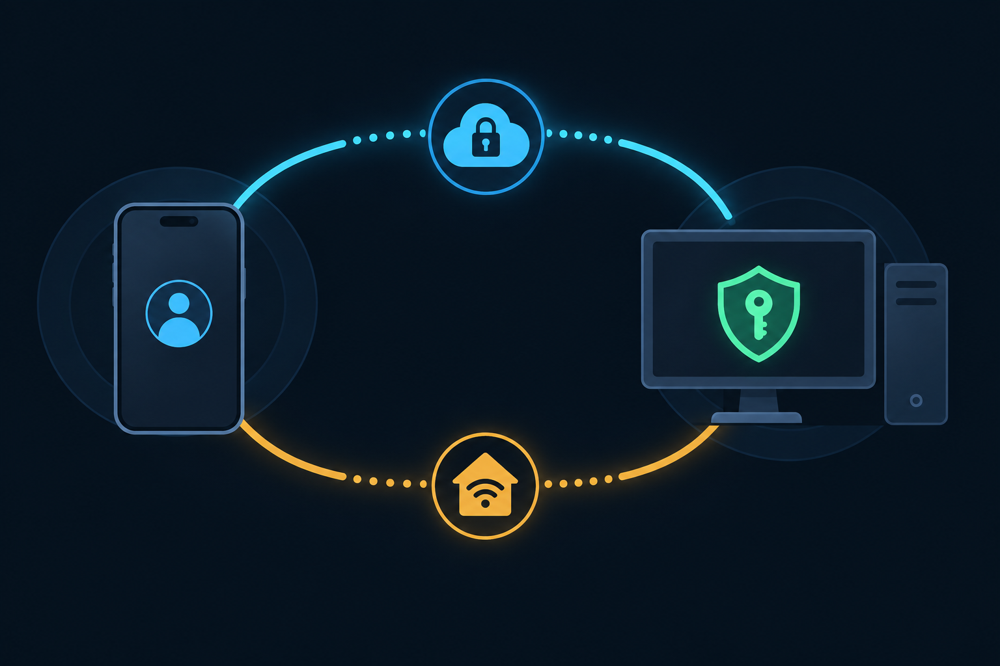
Purpose
讓使用者在離開桌面時（包含位於會擋 tunnel 的公司網路內），用手機瀏覽器或加到主畫面的 PWA 查看 Herdr Agent 狀態、觀看 pane 輸出，並在明確授權下回覆 Agent 或控制 pane；做法參考 Orca 的 Direct · Tailscale／Direct · LAN 路徑，但補上 Orca 缺少的安全控制，且不建立原生 App 與雲端 Relay。
Problem
Yuzora 目前沒有任何對外控制面：產品程式碼中沒有 HTTP／WebSocket RPC、配對、passkey、推播或 QR；唯一 TCP listener 是綁在 127.0.0.1:0 的 host tunnel（src-tauri/src/host_tunnels.rs:134）。Herdr 雖支援遠端控制，但只透過 SSH stdio bridge（herdr remote-client-bridge／remote-api-bridge），本身沒有網路 listener 或驗證，手機瀏覽器無法直接使用。
Orca 的做法可行但偏寬鬆：Direct 路徑以明文 ws://＋舊版 NaCl 加密、配對時綁 0.0.0.0（區網也暴露）、token 無期限、手機權限幾乎不設限。Yuzora 必須在「遠端控制 AI ≒ 控制電腦」的前提下提供同等可達性，同時做到：看得見、可撤銷、可稽核、每次連線皆需硬體綁定的憑證。
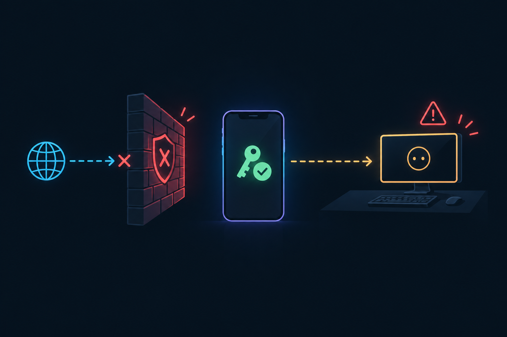
Solution
新增獨立程序 Companion gateway（新 crate src-tauri/companion，binary yuzora-companion），由 Yuzora 桌面以 Tauri sidecar 啟動並以 stdio NDJSON 管理。gateway 重用 yuzora-host library 的 HerdrManager，只把 Herdr 官方接口（API socket、terminal session observe|control、完整 client PTY）以方法白名單橋接給手機；它同時提供 PWA 靜態檔、配對、WebAuthn passkey 驗證與 session。
- Direct · Tailscale：gateway 只 bind
127.0.0.1，由tailscale serve --https=<port>轉入，取得*.ts.net有效憑證；額外核對 Serve 注入的Tailscale-User-Login。Funnel 永不開啟。 - Direct · LAN：gateway 在使用者選定的私有網段介面提供 HTTPS，憑證由 Yuzora 本機 CA 簽發（name constraints 限定
<LocalHostName>.local）；CA 私鑰只存在桌面 OS keychain；手機以https://<name>.local:<port>連線。不提供明文 HTTP 路徑。 - 身分與授權：一次性 QR＋桌面端 SAS 確認配對 → 註冊 passkey；每次連線都要 passkey（UV required）；session 為 HttpOnly cookie；權限分 view（預設）／control（桌面授權＋passkey 提權＋限時）／full session（預設關閉）。所有寫入即時通知桌面並寫入 Logs，可隨時撤銷。
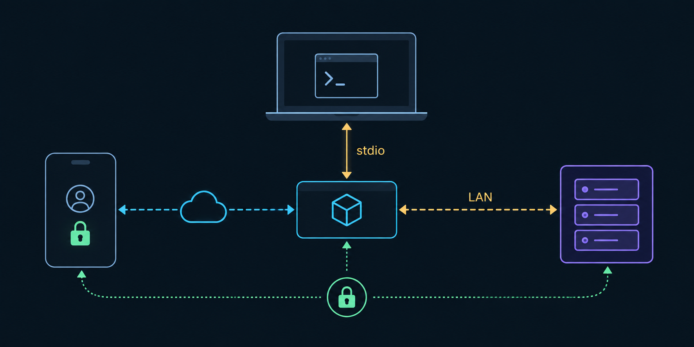
Phone (Safari / Chrome, installed PWA)
│ https://<mac>.<tailnet>.ts.net:8443 https://<LocalHostName>.local:47443
│ (tailscaled terminates TLS, adds identity) (gateway TLS, leaf signed by Yuzora local CA)
▼ ▼
yuzora-companion ── loopback HTTP 127.0.0.1:47110 ── LAN HTTPS <private-ip>:47443
├─ static PWA (allowlist, CSP) ├─ pairing + WebAuthn + sessions
├─ WS /ws → method allowlist └─ audit / control-state events ─┐
└─ HerdrManager (yuzora-host lib) ── Unix socket / named pipe ── Herdr server
│ stdio NDJSON (admin)
Yuzora desktop (Tauri) ── companion_service: spawn / init / pairing approve / revoke ◄─┘
Relevant Files
Existing Files
- existing
.yuuzu/CONTEXT.html— 權威術語（Host Runtime、Named Session、Full Session view、Host helper、Host tunnel）；需新增 Companion 相關術語。 - existing
.yuuzu/adr/0004-herdr-terminals-browser-only.html— 目前產品範圍只含 Herdr terminal＋Browser；Companion 屬新範圍，須以 ADR-0006 記錄。 - existing
.yuuzu/adr/0005-native-windows-opt-in-wsl.html— 最新 runtime／host 決策，Companion 不得改變「每個工作區一個主機 authority」。 - existing
AGENTS.md— shadcn-first、ScrollArea 規則、macOS 僅 Apple Silicon 與發佈規則。 - existing
src-tauri/src/lib.rs—main_webview_commands只允許 main window 呼叫指令（49-64）、指令註冊（約 312-502）、setup 與 exit 流程；新增companion_*指令並在退出時停止 gateway。 - existing
src-tauri/src/herdr_service.rs— Tauri adapter 範式；Herdr binary 來源設定需同步傳給 gateway。 - existing
src-tauri/host/src/herdr_service.rs—HerdrManager：list_sessions、snapshot、capabilities_for_session、feature、open_terminal、events；gateway 以 library 方式重用。 - existing
src-tauri/host/src/herdr_native_client.rs—open_native_client以 portable-pty 執行herdr --session X client；拒絕遠端（70-72），完整 Herdr 模式重用。 - existing
src-tauri/host/src/herdr_transport.rs— Unix socket／Windows named pipe；#[cfg(test)]listener 可做 fake Herdr server 測試。 - existing
src-tauri/host/src/wire.rs、src-tauri/host/src/protocol.rs— bounded NDJSON framing（16 MiB 上限）與 Hello/owner 驗證範式，用於 admin stdio 通道。 - existing
src-tauri/host/Cargo.toml—yuzora-hostlibrary；companion crate 以 path dependency 引用，避免把網路依賴塞進遠端 helper payload。 - existing
src-tauri/src/host_tunnels.rs— 現有 loopback listener 與上限（16 tunnels／32 clients）範式。 - existing
src-tauri/src/host_bootstrap.rs— resource_dir 解析（349-351），sidecar／PWA 資源路徑參考。 - existing
src-tauri/src/db_credentials.rs— keyring 使用範式（CA 私鑰、VAPID 私鑰、session 簽章密鑰）。 - existing
src-tauri/Cargo.toml— 既有 tokio／rustls 0.23＋ring／reqwest（rustls）／keyring／tauri-plugin-notification；新增 rcgen、qrcode 等。 - existing
src-tauri/tauri.conf.json、src-tauri/tauri.macos.conf.json、src-tauri/tauri.windows.conf.json、src-tauri/tauri.linux.conf.json—beforeBuildCommand、bundle.resources；新增externalBin（sidecar）與companion-web資源。 - existing
src-tauri/capabilities/default.json— ACL 只授 main window；Companion 不新增任何 webview 權限。 - existing
src/app/workbench/SettingsDialog.tsx—SECTIONS（138-146）與 section 內容切換；新增companionsection。 - existing
src/app/workbench/settingsPrimitives.tsx、src/app/workbench/settings-search.ts— 設定頁 primitives 與搜尋索引。 - existing
src/app/workbench/StatusBar.tsx— 新增「行動裝置：檢視中／控制中」指示與撤銷入口。 - existing
src/workbench/HerdrNotificationBridge.tsx— 桌面通知範式（toast＋@tauri-apps/plugin-notification），用於「手機送出輸入」通知。 - existing
src/features/logs/userAction.ts—logUserAction；Companion 稽核事件寫入 Logs。 - existing
src/app/panels/HerdrTerminalPage.tsx— 被接管處理（92、1241-1243、1469）與 Full Session 時停用 connector（231-235）；確認手機接管時桌面行為正確。 - existing
src/lib/herdrTypes.ts、src/lib/herdrNormalize.ts、src/lib/herdrAgents.ts— snapshot 正規化與 Agent 狀態／注意程度排序；PWA 直接重用。 - existing
src/terminal/xtermTheme.ts、src/terminal/terminalImeInput.ts— xterm 主題與 IME 處理，PWA 終端機重用。 - existing
src/lib/i18n/index.ts、src/lib/i18n/locales/{zh-TW,en}/— i18next；新增companionnamespace。 - existing
src/components/ui/— shadcn（radix-nova）元件；桌面設定與 PWA 共用。 - existing
vite.config.ts、package.json、tsconfig.json、tsconfig.node.json、eslint.config.js— 新增 PWA build entry、scripts 與 lint／typecheck 涵蓋。 - existing
scripts/verify-host-resources.ts、scripts/release-contract.ts— 資源驗證與發佈契約；需涵蓋 sidecar 與 PWA bundle。 - existing
.github/workflows/ci.yml、.github/workflows/host.yml、.github/clippy-baseline.json、.github/scripts/verify-clippy-baseline.rb— CI 閘門；新增 companion crate 的 fmt／clippy／test。 - existing
docs/operations.md、README.md、README.zh-TW.md、CHANGELOG.md— 使用與維運文件、Experimental 標示與「等同授予遠端 shell 權限」警語。
New Files
- new
.yuuzu/adr/0006-companion-pwa-direct-connections.html— 範圍、威脅模型、兩條直連路徑與拒絕方案（Relay、明文 LAN、Funnel、原生 App）。 - new
spikes/companion-direct/— Phase 0 一次性驗證（WebAuthn／PWA／本機 CA／.local／Herdr 多 client 行為）；不進產品 bundle。 - new
src-tauri/companion/Cargo.toml、src-tauri/companion/Cargo.lock— 獨立 crate（與 host 相同的獨立 lock 慣例），path 依賴../host。 - new
src-tauri/companion/src/main.rs— 進入點：讀 admin stdio 的init、啟動 listeners、graceful shutdown。 - new
src-tauri/companion/src/admin.rs— 桌面 ⇄ gateway 的 NDJSON admin 協定（init、pairing、device、revoke、audit、control-state）。 - new
src-tauri/companion/src/http.rs— axum router、靜態檔 allowlist、安全標頭、body 上限。 - new
src-tauri/companion/src/guard.rs— Host／Origin 驗證、Tailscale 身分 header、私有來源位址檢查、速率限制。 - new
src-tauri/companion/src/pairing.rs— 一次性配對密鑰、TTL、SAS、桌面核准狀態機。 - new
src-tauri/companion/src/webauthn.rs— passkey 註冊／登入（UV required）、challenge 單次使用、signCount 檢查。 - new
src-tauri/companion/src/session.rs— cookie session、idle／absolute TTL、提權（control／full）與撤銷即斷線。 - new
src-tauri/companion/src/bridge.rs— WS RPC、Herdr 方法白名單、observe／control stream、背壓與上限。 - new
src-tauri/companion/src/full_session.rs— 完整 Herdr（PTY client）模式，預設關閉。 - new
src-tauri/companion/src/tls.rs— LAN listener 的 tokio-rustls 設定（僅使用桌面傳入的 leaf cert／key）。 - new
src-tauri/companion/tests/— guard、pairing、webauthn、bridge allowlist、fake Herdr 整合測試。 - new
src-tauri/src/companion_service.rs— sidecar 生命週期、admin 通道、Tauri 指令與事件。 - new
src-tauri/src/companion_tailscale.rs— Tailscale CLI 偵測、status/serve status --json解析、經確認後設定／移除 serve。 - new
src-tauri/src/companion_ca.rs— rcgen 本機 CA（name constraints）與 leaf 簽發、keyring 保存、CA 匯出（.mobileconfig／.crt）。 - new
src-tauri/src/companion_devices.rs— devices.json（只存公鑰、credential id、授權與時間戳）持久化。 - new
src-tauri/src/companion_push.rs— VAPID 金鑰（keyring）與 RFC 8291 Web Push 發送（Phase 7）。 - new
src/lib/companionIpc.ts、src/state/companionStore.ts— typed invoke 包裝與桌面狀態。 - new
src/app/workbench/CompanionSettingsSection.tsx— 設定頁：啟用期限、路徑卡片、裝置清單、授權與撤銷。 - new
src/app/workbench/CompanionPairingDialog.tsx、src/app/workbench/CompanionApprovalDialog.tsx— QR 配對與 SAS 核准（shadcn Dialog／AlertDialog）。 - new
src/app/workbench/CompanionStatusIndicator.tsx、src/workbench/CompanionBridge.tsx— 狀態列指示、稽核事件轉通知與 Logs。 - new
src/lib/i18n/locales/zh-TW/companion.json、src/lib/i18n/locales/en/companion.json— 桌面端字串。 - new
companion/index.html、vite.companion.config.ts— PWA 獨立 build entry，輸出至src-tauri/resources/companion-web/（gitignore）。 - new
src/companion/main.tsx、src/companion/app/— PWA 畫面：Pair、Login、Home、Pane、Control、Full Session、Settings。 - new
src/companion/rpc/client.ts、src/companion/auth/webauthn.ts— WS RPC client（重連不重送輸入）與 WebAuthn 呼叫。 - new
src/companion/terminal/TerminalView.tsx、src/companion/terminal/KeyAccessoryBar.tsx— xterm.js 檢視（縮放／平移）與按鍵列。 - new
src/companion/sw.ts、companion/public/manifest.webmanifest、companion/public/icons/— Service Worker（只快取 app shell）、manifest 與圖示。 - new
src/companion/i18n/{zh-TW,en}.json— PWA 字串。 - new
scripts/build-companion.ts、scripts/verify-companion-bundle.ts— 建置 sidecar＋PWA、驗證無外部 URL／inline script、檔案清單與大小。 - new
.github/workflows/companion.yml— companion crate 的 fmt／clippy-D warnings／test（macOS、Windows、Linux）。
Implementation Phases
IMPORTANT: Execute every phase and task step by step, in order, top to bottom.
Status markers: [] idle · [wip] in progress · [x] complete · [f] failed. All start as []; the Build Plan workflow updates them as it works.
git add／commit／push、不得啟動瀏覽器／E2E 自動化、不得對使用者日常 Herdr session 送出任何 mutation。Herdr 相關實驗一律使用獨立 named session（例如 companion-spike）。[] Phase 0: 決策文件與可行性閘門（Spikes）
在寫任何產品程式碼之前，先把範圍與威脅模型寫進 ADR，並以一次性 spike 在真實手機上驗證兩條路徑最關鍵的平台前提：secure context、PWA 安裝、WebAuthn RP ID、以及 Herdr 多 client 行為。Tailscale 路徑任一目標平台失敗即停止並回到規劃；LAN 路徑失敗只將該平台標為不支援，不提供較弱替代方案。
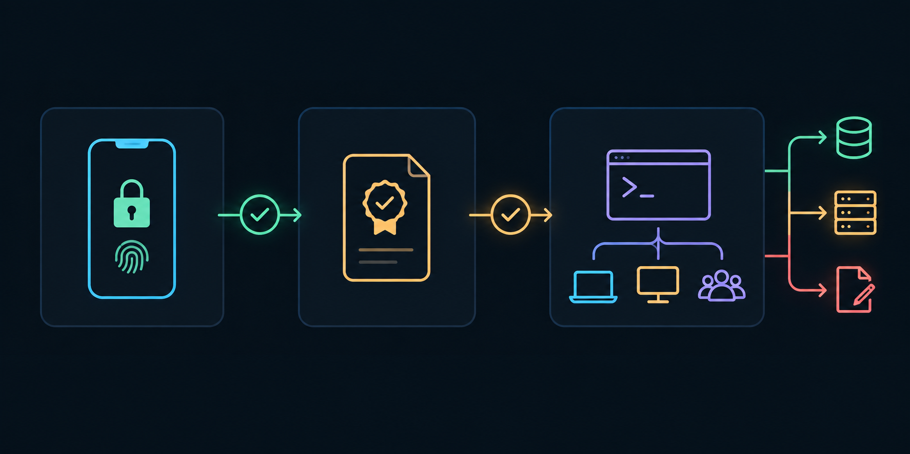
0.1. ADR-0006 與術語
[]建立.yuuzu/adr/0006-companion-pwa-direct-connections.html（Proposed）：範圍（本機 owning host、兩條直連路徑）、安全前提（遠端控制 AI ≒ 帳號 shell 權限）、權限模型、拒絕方案、驗證方式；格式對齊 ADR-0005（zh-Hant、單頁 HTML）。[]在.yuuzu/CONTEXT.html新增術語：Companion device、Companion gateway、Direct path（Tailscale／LAN）、Pairing（含 SAS）、Control grant、Elevation、Full Session access；每個術語標註「避免」用語。
0.2. Spike A — Direct · Tailscale：PWA 與 passkey
[]在spikes/companion-direct/tailscale/建一次性靜態伺服器（bun，僅 bind127.0.0.1:47110），頁面含 manifest、最小 Service Worker、WebAuthn create／get 測試、Notification 權限按鈕，並回顯請求的Tailscale-User-Login／Tailscale-User-Name。[]由使用者在測試機執行tailscale serve --bg --https=8443 http://127.0.0.1:47110（需先在管理後台啟用 HTTPS 憑證）；確認tailscale funnel status未開放該 port。[]真機驗證 iPhone Safari（iOS 17+，加到主畫面）與 Android Chrome：secure context、PWA 安裝、SW 註冊、passkey 建立／登入（RP ID＝<device>.<tailnet>.ts.net，UV 提示）、Notification 權限、身分 header（含 RFC 2047 編碼）。[]驗證來自 tagged device 或 share 使用者的請求：前者無身分 header、後者 login 不同，均能被拒絕。[]收尾：tailscale serve --https=8443 off，記錄tailscale status --json與serve status --json實際欄位（Self.DNSName、User／LoginName、CertDomains、BackendState）作為 Phase 4 fixture。
0.3. Spike B — Direct · LAN：本機 CA 與 .local
[]產生 ECDSA P-256 CA：basicConstraints CA:true pathlen:0、critical nameConstraints 僅允許 DNS<LocalHostName>.local；簽一張該名稱的 leaf，另簽一張其他名稱的 leaf 作反例。[]iOS：以 .mobileconfig 安裝並於「憑證信任設定」開啟完全信任；Android：安裝使用者 CA。雙平台以 AirDrop／Nearby Share／USB 傳檔，並比對 SHA-256 指紋。[]真機驗證：.local名稱解析、TLS 信任、反例 leaf 被 name constraints 拒絕、secure context、SW、passkey 以 RP ID<name>.local建立／登入。[]驗證 Windows（mDNS hostname 回應）與 Linux（avahi）是否能被手機以.local解析。[]產出「LAN 支援矩陣」（平台 × 項目 → 通過／失敗與原因），寫入本計畫 Amendments 與 ADR-0006。
0.4. Spike C — Herdr 多 client 語意（獨立 session）
[]建立獨立 named sessioncompanion-spike；所有操作只針對它，完成後停止並刪除。[]桌面 Yuzora control 某 pane 時：另開herdr terminal session observe→ 確認可同時觀看且不影響尺寸。[]無--takeover的 control → 記錄錯誤字串（預期terminal attach failed: … already has an attached client; retry with --takeover）；加--takeover→ 確認 Yuzora 顯示「已由其他視窗取得控制」且不會自動搶回。[]control 以 pane 目前 cols／rows 連線 → 確認不觸發桌面重新排版；以較小尺寸連線 → 記錄 reflow 行為。[]observe 以手機視窗尺寸（例如 44×30）連線 → 記錄收到的畫面是裁切、縮放或其他，決定 PWA 的 cols／rows 策略。[]在 PTY 執行herdr --session companion-spike client（寬 44 欄）→ 確認手機單欄版面啟動；對某 tab 輸入後觀察 tab 幾何被搶（桌面 connector 的影響與direct_attach_resize_locks互動）。[]session 停止時各接口的錯誤行為（不得自動啟動 server 或 session）。
0.5. 依賴選型閘門
[]WebAuthn RP 驗證套件：不得依賴 OpenSSL；可編譯於aarch64-apple-darwin、x86_64-pc-windows-msvc、Linux x86_64／aarch64；授權相容；支援 ES256／EdDSA／RS256、UV 旗標、BE／BS 旗標。若無合格套件，停止並回報，不自行手刻完整 WebAuthn。[]HTTP／WS：axum（ws）或 hyper＋tokio-tungstenite，與 tokio 1、rustls 0.23（ring provider）相容；TLS：tokio-rustls。[]憑證：rcgen（ring backend，可產生 critical nameConstraints）；QR：Rustqrcode（輸出 SVG）；Web Push：純 Rust 的 RFC 8291／8292 實作候選。[]將選型與理由寫入 ADR-0006；確認新 crate 的cargo tree -i openssl無任何相依。
0.6. Testing Strategy
本階段以真機手動驗證為主（由使用者執行，代理提供步驟與預期結果，不得宣稱已完成實機驗證），並以文件存在性與依賴樹檢查作自動化佐證。任何 Tailscale 路徑的 passkey 或 secure context 失敗都是停止條件。
[]manual: Spike A 結果表（iOS／Android × secure context／PWA／SW／passkey／identity header）全數通過— Tailscale 路徑前提成立。[]manual: Spike B LAN 支援矩陣已記錄— LAN 路徑在各平台的支援範圍已知。[]manual: Spike C 行為紀錄（observe／control／takeover／geometry／stopped session）— bridge 策略有實證依據。[]rg -n "Proposed|Accepted" .yuuzu/adr/0006-companion-pwa-direct-connections.html— ADR 已建立。[]rg -n "Companion gateway" .yuuzu/CONTEXT.html— 術語已加入。[]herdr session list --json— 確認companion-spike已刪除、日常 session 未被動到。
[] Phase 1: Companion crate 骨架、admin 通道與 HTTP 安全外殼
建立獨立 crate src-tauri/companion（binary yuzora-companion），以 path 依賴重用 yuzora-host library，而不把網路依賴加進會部署到遠端主機的 helper。本階段只完成程序生命週期、admin stdio 協定、loopback listener、靜態檔與所有請求層防護；尚不接 Herdr、不做驗證。
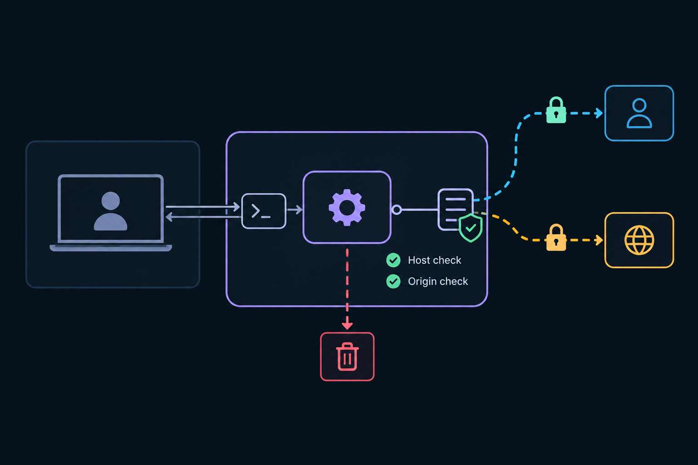
1.1. Crate 與程序生命週期
[]新增src-tauri/companion/Cargo.toml（獨立Cargo.lock，與 host 相同慣例）、#![forbid(unsafe_code)]、edition 2021、版本與 app 一致。[]stdout 專供 admin 協定，所有日誌寫 stderr；啟動後 5 秒內未收到init即以非零碼結束。[]stdin EOF（桌面結束或崩潰）→ 立即關閉所有 listener 與 Herdr stream 後結束，保證不留孤兒 listener。[]收到shutdown→ 以 close code 1001 關閉 WS、2 秒內結束。
1.2. Admin stdio 協定（admin.rs）
[]NDJSON、每行{"v":1,"type":…}；沿用yuzora_host::wire的上限與解析方式；未知 type 回error並保持連線。[]init欄位：herdrBinary、sessionAllowlist、webRoot、listeners.loopback{port, publicHost, requiredTailscaleLogin}、listeners.lan{binds[], port, publicHost, certPem, keyPem}（Phase 6 前為 null）、devices[]、policy{enableUntil, viewIdleMin, viewAbsoluteHours, elevationMaxMin, fullSessionEnabled, maxDevices}。[]gateway→desktop 事件：ready{ports}、error{code, message}，並預留pairing.claimed、device.registered、session.opened|closed、audit、control.state、push.request。[]certPem／keyPem只存於記憶體（zeroize），不得寫入磁碟或日誌。
1.3. Loopback listener 與請求防護（http.rs、guard.rs）
[]僅 bind127.0.0.1:<port>（預設 47110，可設定）；port 被占用時回報error{code:"port-in-use"}，不自動換 port（Serve 設定指向固定 port）。[]Host header 必須等於publicHost（例如mac.tailnet.ts.net:8443），否則 421；阻擋 DNS rebinding。[]loopback 上每個請求都必須帶Tailscale-User-Login且（RFC 2047 解碼後）等於requiredTailscaleLogin，否則 403；此 header 只作為額外訊號，不取代 passkey。[]非 GET 請求與 WS upgrade 必須帶Origin且等於https://<publicHost>，否則 403（防 CSWSH）。[]上限：body 64 KiB、header 數量與大小、請求逾時 15 秒；token bucket 速率限制（每來源 login／IP）。
1.4. 靜態檔與安全標頭
[]只允許/、/index.html、/assets/*、/manifest.webmanifest、/sw.js、/icons/*、/pair（回傳 index）；拒絕..、%2e變形、反斜線、NUL；canonicalize 後必須位於webRoot內（拒絕逃逸的 symlink）。[]快取：/assets/*immutable；index.html、sw.js、manifest 為 no-cache；/api/*為no-store。[]所有回應：Content-Security-Policy: default-src 'self'; script-src 'self'; style-src 'self' 'unsafe-inline'; img-src 'self' data: blob:; connect-src 'self'; worker-src 'self'; manifest-src 'self'; frame-ancestors 'none'; base-uri 'none'; form-action 'none'、X-Content-Type-Options: nosniff、Referrer-Policy: no-referrer、Cross-Origin-Opener-Policy: same-origin、Cross-Origin-Resource-Policy: same-origin、Permissions-Policy: camera=(), microphone=(), geolocation=()、Strict-Transport-Security: max-age=31536000。
1.5. Testing Strategy
Rust 整合測試以 ephemeral port 起真實 listener，搭配表格化的惡意請求；另以子程序測試 init 逾時與 stdin EOF。邊界：大小寫與 RFC 2047 編碼的 login、IPv6 Host、重複 Host header、缺 Origin 的 WS。
[]cargo fmt --manifest-path src-tauri/companion/Cargo.toml -- --check— 格式一致。[]cargo clippy --locked --all-targets --manifest-path src-tauri/companion/Cargo.toml -- -D warnings— 零警告。[]cargo test --locked --manifest-path src-tauri/companion/Cargo.toml guard_— Host／Origin／身分 header／速率限制測試通過。[]cargo test --locked --manifest-path src-tauri/companion/Cargo.toml static_— 路徑穿越、symlink 逃逸、快取與安全標頭測試通過。[]cargo test --locked --manifest-path src-tauri/companion/Cargo.toml lifecycle_— init 逾時、stdin EOF、shutdown 測試通過。[]cargo tree --manifest-path src-tauri/companion/Cargo.toml -i openssl— 預期「did not match any packages」，確認無 OpenSSL。
[] Phase 2: 配對、passkey 與 session
實作一次性 QR 配對、雙端 SAS 比對與桌面核准，接著註冊 passkey；之後每次連線都必須通過 passkey（UV required）才取得 HttpOnly session cookie。寫入權限需桌面授權的 control grant，並在授權期限內以 passkey 提權。
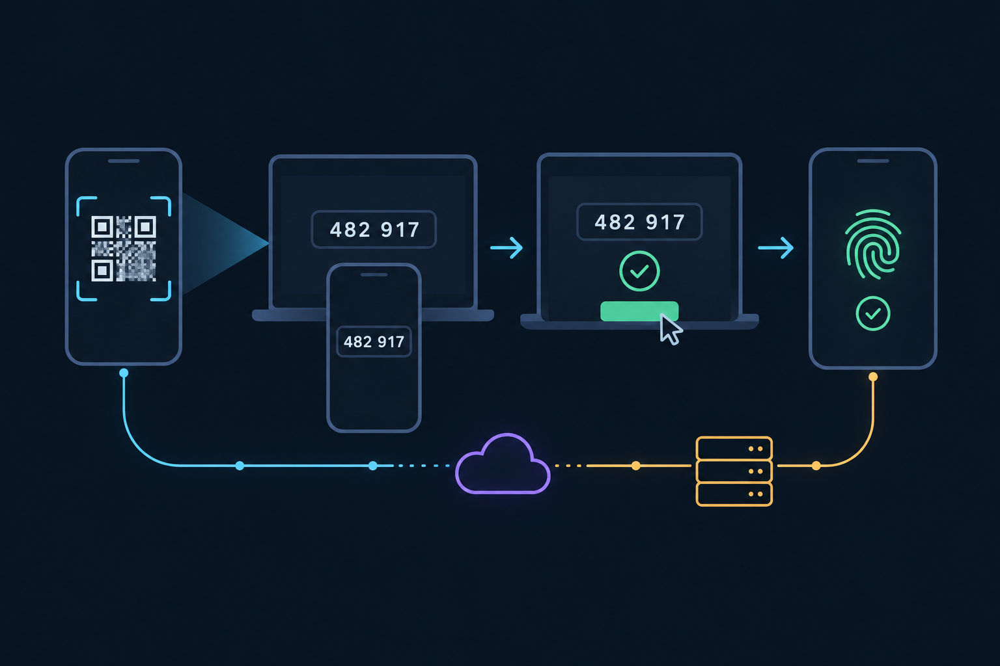
2.1. 配對建立與領取（pairing.rs）
[]pairing.create{path}：pairingId（16 bytes）、secret（32 bytes）、TTL 5 分鐘、綁定該路徑的 origin；回傳https://<publicHost>/pair#p=<pairingId>.<secret>（secret 只在 fragment，不送 server、不入日誌）。[]POST /api/pair/claim {pairingId, secret, deviceLabel, deviceNonce}：常數時間比對；每個 pairing 只接受一次成功領取，失敗 5 次或第二次領取即作廢並通知桌面。[]SAS＝HMAC-SHA256(secret, "yz-sas-v1" ‖ deviceNonce ‖ gatewayNonce) 取 6 位數；回傳手機顯示，並以pairing.claimed{pairingId, deviceLabel, sas, via, remoteAddr, tailscaleLogin, userAgent}送桌面。[]桌面pairing.approve|reject前，手機以GET /api/pair/status（long-poll ≤ 25 秒）等待；逾時即作廢。
2.2. Passkey 註冊與登入（webauthn.rs）
[]註冊選項：rp.id＝publicHost 去掉 port；user.id 每裝置隨機 16 bytes；residentKey: preferred、userVerification: required、attestation: none；演算法 ES256／EdDSA／RS256；challenge 32 bytes、TTL 2 分鐘、單次使用。[]驗證通過後送device.registered{deviceId, label, credential{id, publicKeyCose, rpId, signCount, backupEligible, backupState, transports}, createdAt}；預設權限只有 view。[]登入：POST /api/auth/options（allowCredentials 只含該 rpId 的 credential）→POST /api/auth/finish；驗證 origin 完全相符、rpIdHash、UP＋UV 旗標、challenge 單次、signCount 非零時必須遞增（倒退 → 鎖定裝置並通知桌面）。[]連續 5 次驗證失敗 → 鎖定裝置，需桌面解鎖；auth 端點每裝置／來源每分鐘 10 次上限。
2.3. Session、提權與撤銷（session.rs）
[]Cookie__Host-yzc：Secure、HttpOnly、SameSite=Strict、Path=/；值為 32 bytes 隨機 session id，對應記憶體中的{deviceId, rpId, createdAt, lastSeen, elevation}；gateway 重啟即全部失效。[]View session：idle 30 分鐘、absolute 12 小時，且不超過policy.enableUntil。[]POST /api/auth/elevate/*（scope＝control|full）：需裝置有對應 grant 且 grant 未過期，再做一次 passkey；control 提權最長 15 分鐘（可續），不超過 grant 期限；full 需policy.fullSessionEnabled且每次full.open前 2 分鐘內重新驗證。[]device.revoke／device.update降權 → 立即作廢相關 session 並以 close code 4401 關閉 WS；POST /api/auth/logout清除 session。
2.4. Testing Strategy
以測試用軟體 authenticator（測試內產生 P-256／Ed25519 金鑰並組出 attestation／assertion）驅動完整流程；時間相關邏輯注入可控時鐘。邊界：過期 pairing、重複領取、錯誤 SAS、challenge 重放、跨 origin、缺 UV、signCount 倒退、撤銷中的連線、grant 到期時的提權。
[]cargo test --locked --manifest-path src-tauri/companion/Cargo.toml pairing_— TTL、單次領取、失敗作廢、SAS 決定性與常數時間比對。[]cargo test --locked --manifest-path src-tauri/companion/Cargo.toml webauthn_— 註冊／登入成功與各種拒絕情境。[]cargo test --locked --manifest-path src-tauri/companion/Cargo.toml session_— cookie 屬性、idle／absolute TTL、提權期限、撤銷即斷線。[]cargo clippy --locked --all-targets --manifest-path src-tauri/companion/Cargo.toml -- -D warnings— 零警告。
[] Phase 3: Herdr bridge（view → control → full session）
以 WebSocket 把 Herdr 官方接口橋接給已驗證的 session：view 權限可列 session／Agent、訂閱事件、observe pane；control 權限可回覆 Agent、控制 pane；full 權限可開完整 Herdr client。只使用方法白名單，絕不原樣轉發 API socket。
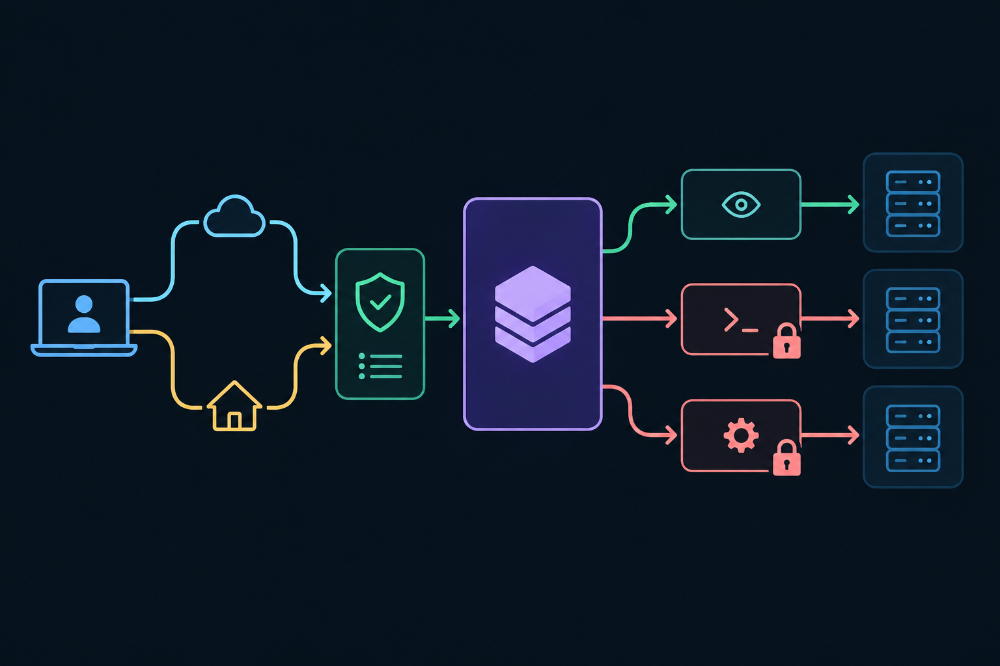
3.1. 範圍與 WS 協定 v1（bridge.rs）
[]只暴露sessionAllowlist中且正在執行的本機 named session；session 停止時回session-stopped，絕不自動啟動 server 或 session。[]GET /ws需有效 cookie 與 Origin；文字 frame 為 JSON RPC（{id, method, params}／{id, result|error}／{event, data}），二進位 frame 為streamId(u32 BE) ‖ ANSI bytes。[]view：hello（回傳能力、權限、VAPID 公鑰）、sessions.list、snapshot.get{session}、events.subscribe{session}、terminal.observe{session, target, cols, rows}、stream.close{stream}、push.subscribe（Phase 7）。[]control：terminal.control{session, target, takeover=false, cols, rows}（cols／rows 預設取 pane 目前尺寸，避免桌面重排）、terminal.input{stream, text|bytesB64}（≤ 4 KiB）、terminal.scroll、terminal.release、agent.prompt{session, target, text}（≤ 16 KiB）、pane.sendKeys{session, target, keys[]}（僅 Enter、Escape、Tab、BackTab、方向鍵、Ctrl-C、Ctrl-D）。[]full：full.open{session, cols, rows}（重用open_native_client，每裝置同時 ≤ 1）、full.input、full.resize、full.close。
3.2. 白名單與拒絕清單
[]以 Herdr 0.9.1 bundled schema（herdr api schema --json匯出為測試 fixture）列舉全部 129 個方法；只有上述對應方法可達，其餘一律拒絕並記錄。[]明確拒絕（防禦縱深）：server.*、plugin.*、integration.*、command.invoke、worktree.remove、workspace.close、tab.close、pane.close、layout.apply、client_shell.*、client.window_title.*、notification.show、popup.*、pane.report_*、pane.clear_agent_authority、pane.release_agent。
3.3. 接管、背壓與上限
[]無 takeover 的 control 遇到既有 owner → 回owned-elsewhere；takeover:true需 2 分鐘內的新鮮提權，並送control.state{deviceId, session, target, takeover:true}給桌面。[]被桌面取回控制時回報taken-over，gateway 絕不自動搶回。[]每連線 outbound 上限 4 MiB、每 stream 256 frames；observe 溢位 → 以slow-consumer關閉該 stream（手機重開後 Herdr 會重送當前畫面）；control 輸入不得靜默丟棄，送出失敗即回錯誤；重連後不重送任何輸入。[]上限：配對裝置 ≤ 4（可設定）、每裝置 WS ≤ 2、每 WS stream ≤ 8、單則訊息 ≤ 64 KiB、每連線 50 msg/s。
3.4. 稽核事件
[]所有 control／full 動作送audit{deviceId, scope, action, session, target, summary, at}。[]摘要規則：agent.prompt記前 200 字＋長度；terminal.input／full.input只記每 10 秒的位元組數（不記原始按鍵，可能含密碼）；takeover、full.open／close、release 逐筆記錄。
3.5. Testing Strategy
以 herdr_transport 的測試 listener 或腳本化 fake herdr binary（輸出 NDJSON terminal.frame／terminal.closed）建立可重現環境；fixture 取自 Spike C 的實際錯誤字串。邊界：多 observer 扇出、owner 衝突、接管與被取回、慢速消費者、重連不重送、session 停止、白名單外的每一個 schema 方法。
[]cargo test --locked --manifest-path src-tauri/companion/Cargo.toml bridge_allowlist_— 129 個 schema 方法中白名單外全數被拒。[]cargo test --locked --manifest-path src-tauri/companion/Cargo.toml bridge_stream_— observe 扇出、control 衝突、takeover、taken-over、slow-consumer、無重送。[]cargo test --locked --manifest-path src-tauri/companion/Cargo.toml bridge_scope_— view 無法呼叫 control／full；過期提權被拒；full 需新鮮驗證。[]cargo test --locked --manifest-path src-tauri/companion/Cargo.toml audit_— 稽核摘要不含原始按鍵。[]cargo test --locked --manifest-path src-tauri/host/Cargo.toml— host library 若有新增 pub 匯出，既有測試不受影響。
[] Phase 4: 桌面整合（sidecar、Tailscale 設定、設定頁、狀態列、稽核）
由 Yuzora 桌面以 Tauri sidecar 啟動並管理 gateway，提供設定頁（啟用期限、路徑、Session 範圍、裝置與授權）、配對與 SAS 核准對話框、狀態列指示與撤銷，並把稽核事件轉成桌面通知與 Logs。所有指令沿用 main-window-only 閘門，不新增任何 webview 權限。
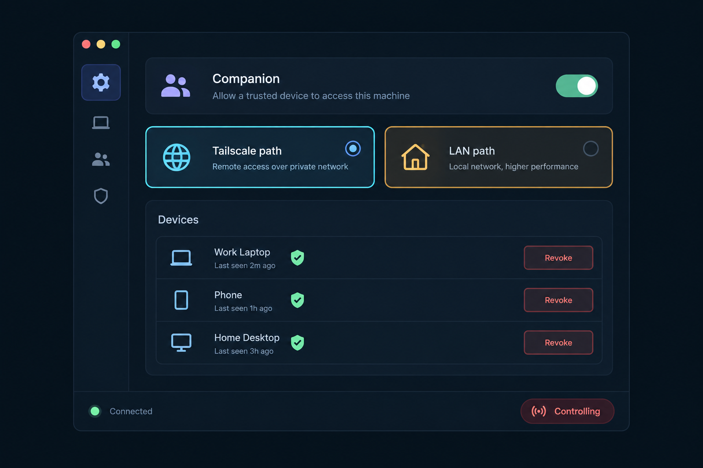
4.1. Sidecar 打包與啟動
[]scripts/build-companion.ts：以目前 target 建置 companion crate，輸出src-tauri/binaries/yuzora-companion-<target-triple>[.exe]（gitignore），並建置 PWA（Phase 5）。[]tauri.conf.json加入bundle.externalBin: ["binaries/yuzora-companion"]；beforeBuildCommand加入bun run companion:build；各平台 conf 的resources加入resources/companion-web/。macOS 只建aarch64-apple-darwin（AGENTS.md）。[]Rust 端由目前執行檔同目錄解析 sidecar 路徑，以tokio::process啟動（stdin／stdout piped、stderr 轉 Yuzora logs、kill_on_drop）；不引入tauri-plugin-shell。
4.2. companion_service.rs
[]狀態機 Disabled → Starting → Running{paths} → Stopping；重啟 backoff 最多 3 次，之後回 Disabled 並顯示錯誤。[]啟用期限：1 小時／8 小時（預設）／直到 Yuzora 結束；到期自動停用；App exit hook（lib.rs的退出流程）必定送shutdown並等待結束。[]init內容：Herdr binary（取自 HerdrManager 目前選定來源）、webRoot＝resource_dir/companion-web、listeners、devices、policy、sessionAllowlist。[]Tauri 指令：companion_status、companion_enable{window, paths}、companion_disable、companion_pairing_create{path}（回{qrSvg, expiresAt}，UI 不顯示明文 secret）、companion_pairing_decide{pairingId, approve}、companion_devices、companion_device_update{deviceId, label, grants}、companion_device_unlock、companion_device_revoke、companion_sessions_set、companion_tailscale_probe、companion_tailscale_apply{confirm}、companion_tailscale_remove；事件companion://event。[]QR 以 Rustqrcode產生 SVG；pairing secret 不經前端 state 保存、不寫入 Logs。
4.3. companion_tailscale.rs
[]CLI 探測：macOS/Applications/Tailscale.app/Contents/MacOS/Tailscale與 PATHtailscale；Windows%ProgramFiles%\Tailscale\tailscale.exe；Linux PATH。找不到時顯示安裝指引（不自動安裝）。[]唯讀探測：tailscale status --json（BackendState、Self.DNSName、登入者 LoginName、CertDomains 是否含本機名稱）、tailscale serve status --json（所選 HTTPS port 是否已被其他 handler 使用）、tailscale funnel status --json（該 port 是否公開）。欄位以 Phase 0 fixture 為準。[]套用：確認對話框顯示完整指令tailscale serve --bg --https=<port> http://127.0.0.1:<gatewayPort>，使用者按下確認才執行；預設 HTTPS port 8443，避免覆蓋使用者既有的 443 設定；port 衝突或被 Funnel 公開時拒絕啟用 Tailscale 路徑。[]停用或移除時只執行tailscale serve --https=<port> off，不動其他 serve 設定；啟用當下的 LoginName 寫入requiredTailscaleLogin。
4.4. companion_devices.rs
[]<app_data>/companion/devices.json：schema version、deviceId、label、credentials（依 rpId）、grants（control: {until} | null、full: bool）、locked、createdAt、lastSeen、push subscription（Phase 7）；不含任何 secret。[]原子寫入（tmp＋rename）、Unix 權限 0600；損毀時保留備份並停用 Companion，不自動重建。
4.5. 設定頁與對話框（shadcn）
[]SettingsDialog.tsx新增 SectionIdcompanion（lucideSmartphone，放在safety附近），僅在 Experimental 旗標開啟時顯示；settings-search.ts加入索引。[]CompanionSettingsSection：Experimental Badge；紅色警語「開啟後，已授權的手機可遠端操作 AI Agent，等同授予此電腦帳號的 shell 權限」；啟用 Switch＋期限 Select；Tailscale 卡片（狀態、DNS 名稱、登入者、HTTPS、Funnel、port、套用／移除）；LAN 卡片（Phase 6）；Session 範圍；裝置 Table（名稱、路徑、最後連線、control 期限 15 分／1 小時／8 小時、full 開關、解鎖、撤銷）。清單使用ScrollArea。[]CompanionPairingDialog：選擇路徑 → 顯示 QR SVG 與倒數，逾時自動作廢。[]CompanionApprovalDialog（AlertDialog）：大字 SAS、裝置名稱、路徑、來源位址、Tailscale 登入者、User-Agent；核准／拒絕；視窗未聚焦時要求注意。[]i18n：companion.json（zh-TW／en）。
4.6. 狀態列與稽核橋接
[]CompanionStatusIndicator：停用時隱藏；啟用時顯示剩餘期限；有檢視中裝置顯示數量；有 control 提權時以紅色顯示「控制中」，Popover 列出裝置並提供「全部撤銷」。[]CompanionBridge：audit→logUserAction（categorycompanion）＋寫入類動作 toast（例如「iPhone 對 agent X 送出輸入」）；control.statetakeover → 視窗未聚焦時送系統通知；pairing.claimed→ 開啟核准對話框。
4.7. Testing Strategy
Rust 單元測試涵蓋 Tailscale JSON 解析（fixture：HTTPS 未啟用、Funnel 開啟、port 衝突、未登入）、devices.json 原子寫入與損毀處理、sidecar 生命週期（stdin EOF、期限到期、exit hook）。前端以 vitest（jsdom）測設定頁各狀態、SAS 對話框、狀態列、事件 → Logs／toast 對應。邊界：Tailscale CLI 不存在、指令逾時、使用者取消確認。
[](cd src-tauri && cargo test --locked companion_)— companion_service／tailscale／ca／devices 測試通過。[](cd src-tauri && cargo fmt --package yuzora -- --check)— 格式一致。[](cd src-tauri && ruby ../.github/scripts/verify-clippy-baseline.rb ../.github/clippy-baseline.json)— clippy baseline 完全吻合，新程式碼零警告。[]bun run test src/app/workbench/CompanionSettingsSection.test.tsx src/app/workbench/CompanionApprovalDialog.test.tsx src/app/workbench/CompanionStatusIndicator.test.tsx src/workbench/CompanionBridge.test.tsx— 桌面 UI 行為通過。[]bun run lint && bun run typecheck— 前端靜態檢查通過。
[] Phase 5: PWA 前端
以獨立 Vite entry 建置手機優先的 PWA：配對、passkey 登入、Agent 清單、pane 檢視、提權後的控制與快速回覆、（可選）完整 Herdr。重用桌面的 Herdr 正規化、xterm 主題與 shadcn 元件，不引入外部 CDN。
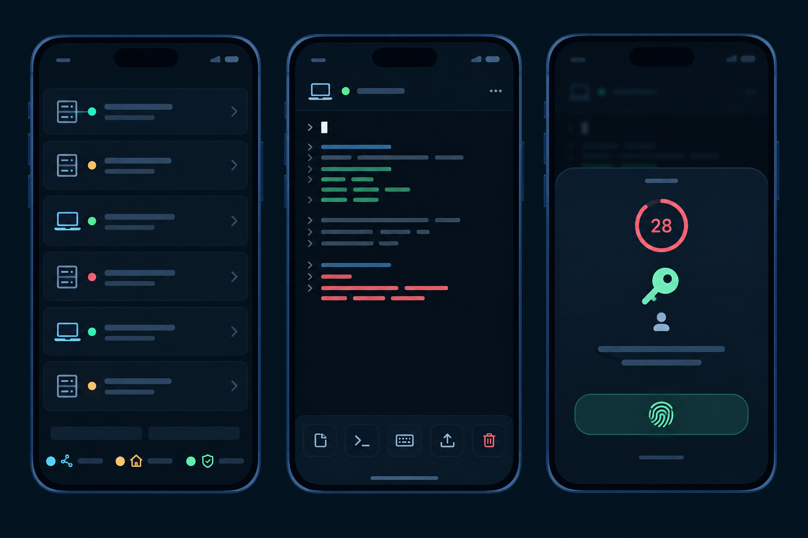
5.1. Build 設定
[]companion/index.html、vite.companion.config.ts：rootcompanion/、alias@→src、outDirsrc-tauri/resources/companion-web（gitignore）、base: '/'；sw.ts另建為/sw.js。[]package.jsonscripts：companion:build（bun scripts/build-companion.ts）、companion:web（只建 PWA）、companion:dev（vite dev＋proxy 到本機 gateway loopback port）；tsconfig.json與eslint.config.js涵蓋src/companion。
5.2. 狀態機與配對／登入
[]狀態：Unpaired → Claiming → AwaitingDesktop（顯示 SAS）→ RegisterPasskey → LoggedOut → Viewing → Elevated(control|full，倒數) 。[]讀取#p=後立刻history.replaceState清除；localStorage 只存非機密提示（deviceLabel、上次路徑），驗證完全依賴 HttpOnly cookie。[]WebAuthn 呼叫封裝於src/companion/auth/webauthn.ts；錯誤（取消、無 passkey、不支援）有明確 UI。
5.3. 畫面
[]Home：Session → Space → Agent 清單，狀態徽章（idle／working／blocked／done／unknown）與注意程度排序，重用herdrNormalize.ts／herdrAgents.ts；以events.subscribe即時更新；清單用ScrollArea。[]Pane：TerminalView（xterm.js，沿用已 patch 的@xterm/xterm）以 pane 實際 cols／rows 渲染，縮放至螢幕寬並支援雙指縮放與平移；不載入剪貼簿 addon（不處理 OSC 52 寫入）；OSC 8 連結經linkHandler確認後才開啟。[]Control：「取得控制」→ passkey 提權 →terminal.control；若owned-elsewhere，顯示「桌面正在控制此 pane，接管後桌面會收到通知」並再做一次 passkey 才送takeover；KeyAccessoryBar（Esc、Tab、⇧Tab、Ctrl-C、Ctrl-D、方向鍵、Enter）；輸入框可選「送給 Agent（agent.prompt）」或「直接輸入」。[]核准提示：Agent 處於 blocked 時，送出y／Enter 前必須顯示 pane 內完整的待核准內容與工作目錄，並需再次點擊確認。[]Full Herdr（僅在裝置有 full grant 且 policy 允許時出現）：警告頁（等同 shell、會改變桌面該 tab 的尺寸）→ 新鮮 passkey → 以手機寬度開啟（≤ 64 欄時 Herdr 自動切換手機版面）→ 提供 Ctrl-B prefix 按鈕 → App 進入背景時關閉。
5.4. 韌性與 PWA
[]WS 重連：退避 1 秒 → 30 秒加 jitter，visibilitychange回前景時立即重試；待送輸入一律丟棄並提示，絕不重送；session 過期回登入。[]manifest.webmanifest：name「Yuzora」、display: standalone、品牌色與既有品牌資產產出的圖示。[]Service Worker：只 precache 帶 hash 的 app shell；不快取/api/*、/ws；新版時提示重新載入。[]i18n（zh-TW／en）、觸控目標 ≥ 44px、shadcn 元件優先。
5.5. Testing Strategy
vitest（jsdom）測狀態機、fragment 清除、RPC client 重連不重送、按鍵列對應、以 snapshot fixture 驗證 Agent 投影、接管確認流程；bundle 驗證腳本檢查無外部 URL、無 inline script、SW 與 manifest 存在、大小預算。邊界：WebAuthn 取消、cookie 過期、多分頁同時開啟。
[]bun run test src/companion— PWA 單元測試通過。[]bun run companion:web— PWA 建置成功並輸出至src-tauri/resources/companion-web。[]bun scripts/verify-companion-bundle.ts— 無外部資源、無 inline script、CSP 相容、SW／manifest 存在、gzip 後總大小 ≤ 2.5 MB。[]bun run lint && bun run typecheck— 靜態檢查通過。
[] Phase 6: Direct · LAN（本機 CA、LAN listener、CA 匯出）
依 Phase 0 的 LAN 支援矩陣，只在通過的平台開放。Yuzora 產生 name-constrained 本機 CA（私鑰只在 OS keychain），為 <LocalHostName>.local 簽發短效 leaf 交給 gateway；gateway 僅在私有網段介面提供 HTTPS。沒有明文 HTTP、沒有以 IP 登入的替代方式。
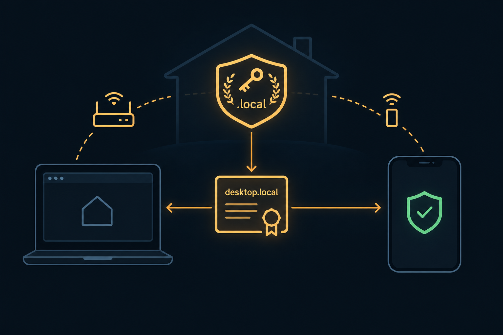
.local 名稱簽證；leaf 90 天自動輪替，私鑰不落地。6.1. companion_ca.rs
[]CA：ECDSA P-256、basicConstraints CA:true pathlen:0、keyUsage keyCertSign／cRLSign、critical nameConstraints 僅 permitted DNS<LocalHostName>.local、效期 2 年；私鑰 PKCS#8 存 keyring（serviceyuzora.companion.ca），憑證 PEM 存 app data。[]Leaf：SAN DNS<LocalHostName>.local、EKU serverAuth、效期 90 天、剩 30 天自動重簽；leaf 私鑰每次重新產生，只經 admininit傳入 gateway 記憶體。[]主機名稱：macOSscutil --get LocalHostName；Windows／Linux 依 Phase 0 結果；名稱變更 → 需重建 CA 並重新信任（UI 說明原因），不放寬 constraints。
6.2. CA 匯出與信任指引
[]匯出 iOS.mobileconfig（com.apple.security.root，顯示名稱「Yuzora Companion CA (<host>)」）與 Android DER.crt，經儲存對話框輸出；UI 顯示 SHA-256 指紋供手機端比對。[]不提供任何 HTTP 下載端點（避免 CA 被替換）；指引使用 AirDrop／Nearby Share／USB，並說明 iOS「完全信任」開關位置。
6.3. LAN listener
[]使用者在設定中選擇介面；只允許 RFC 1918、ULA、link-local 位址，拒絕公網位址；預設 port 47443。[]tokio-rustls：TLS 1.2+、ALPNhttp/1.1、只用 init 傳入的 leaf；來源 IP 必須為私有位址；Host 必須為<name>.local:<port>；Origin 規則同 Phase 1。[]作業系統防火牆：macOS 應用程式防火牆提示、Windows Defender 規則限定 Private profile，寫入操作文件。[]LAN 配對：同 Phase 2 流程，RP ID＝<name>.local；同一裝置在不同路徑各有一組 credential（依 rpId），需各自配對。[]未通過矩陣的平台：LAN 卡片顯示「此平台不支援」與原因，不提供較弱替代。
6.4. Testing Strategy
Rust 測試以 rustls／webpki 實際驗證憑證鏈；在暫存 app data 目錄中執行以確認私鑰不落地。邊界：name constraints 反例、主機名稱變更、leaf 輪替門檻、公網來源位址、錯誤 Host。
[](cd src-tauri && cargo test --locked companion_ca_)— CA 含 critical nameConstraints 且只有一個 permitted DNS；合法 leaf 驗證通過；其他名稱 leaf 被拒；私鑰未寫入磁碟；輪替門檻正確。[]cargo test --locked --manifest-path src-tauri/companion/Cargo.toml lan_— TLS handshake（信任測試 CA 的 rustls client）成功；公網來源與錯誤 Host 被拒。[]manual: LAN 支援平台的真機配對、登入、observe 通過— 使用者依步驟驗證。
[] Phase 7: Web Push 通知
在已安裝且位於 secure context 的 PWA 上，Agent 進入 blocked 或 done 時由桌面直接發送 Web Push（RFC 8291 加密、RFC 8292 VAPID），不需要 Yuzora 雲端。推播內容只含 Agent 名稱與狀態。僅在 Companion 啟用期間運作。
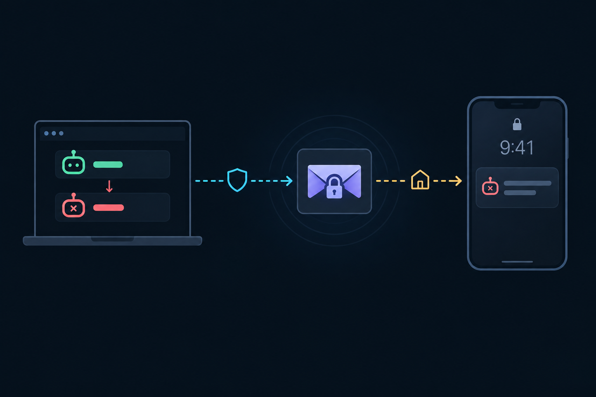
7.1. 訂閱
[]VAPID P-256 金鑰存 keyring；公鑰經hello提供給 PWA。[]PWA 在使用者手勢下請求通知權限並pushManager.subscribe({userVisibleOnly: true, applicationServerKey})，以push.subscribe送出；gateway 送push.registered，桌面寫入 devices.json（0600）。
7.2. 觸發與發送（companion_push.rs）
[]gateway 內部訂閱 allowlist session 的pane.agent_status_changed；轉為 blocked／done 時送push.request{deviceIds, payload}。[]桌面以 reqwest（rustls）發送：aes128gcm 內容加密、VAPID JWT（exp ≤ 12 小時）、TTL 1 小時、blocked 用 Urgency high；同一 Agent 60 秒冷卻；404／410 移除訂閱。[]Payload：{title: Agent 顯示名稱, body: "等待輸入" | "已完成", session, paneRef}；Service Worker 顯示通知，點擊開啟對應 pane（仍需登入）。
7.3. Testing Strategy
以 RFC 8291 Appendix A 測試向量驗證加密；VAPID JWT 以公鑰驗簽並檢查 claims；冷卻與 410 清理以可控時鐘與 mock HTTP 測試；確保 payload 不含 pane 輸出。
[](cd src-tauri && cargo test --locked companion_push_)— 測試向量、JWT、冷卻、410 清理、payload 內容限制通過。[]bun run test src/companion/push— PWA 訂閱流程與通知點擊導向通過。[]manual: iPhone（主畫面 PWA）與 Android 收到 blocked／done 通知— 使用者真機驗證。
[] Phase 8: 強化、文件、發佈與實機驗收
完成威脅模型測試掃描、一次獨立的跨模型家族安全審查、文件與發佈契約更新，並由使用者執行實機驗收矩陣。功能以 Experimental 旗標出貨，預設關閉。
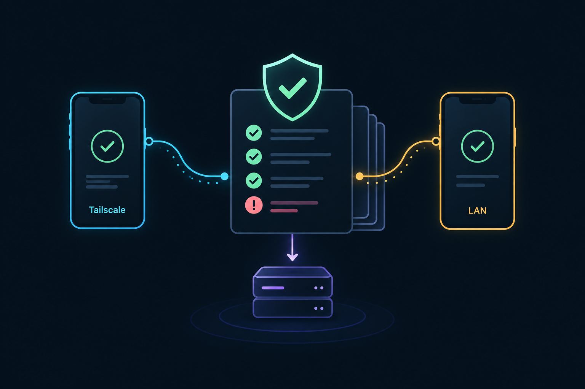
8.1. 安全強化
[]依 Notes 的威脅表逐項補齊測試；admin 與 WS 解析器以表格化惡意輸入測試（截斷 JSON、超長欄位、錯誤型別、未知方法）。[]一次 fresh-context、唯讀、與作者不同模型家族的安全審查（依~/.pi/agent/herdr-agents/README.md的跨家族規則選擇並確認模型）；修正所有 P0／P1 並附回歸測試。
8.2. 文件
[]ADR-0006 改為 Accepted，補上 Phase 0 矩陣與最終選型；CONTEXT 術語定稿。[]docs/operations.md：Tailscale HTTPS 啟用、serve port、ACL／Grants 只放行手機的範例、Funnel 必須關閉、LAN CA 安裝與指紋比對、撤銷與疑難排解。[]README.md／README.zh-TW.md：Experimental 說明與「等同授予遠端 shell 權限」警語；CHANGELOG.md新增條目。
8.3. 發佈與 CI
[].github/workflows/companion.yml：companion crate 的 fmt、clippy-D warnings、test（macOS、Windows、Linux）。[]scripts/verify-host-resources.ts（或新增驗證）與scripts/release-contract.ts涵蓋 sidecar 與companion-web；安裝包解包驗證包含兩者。[]Experimental 旗標：預設關閉；關閉時不啟動 sidecar、不顯示設定頁以外的任何 UI。
8.4. 實機驗收矩陣（使用者執行）
[]iPhone Safari（主畫面 PWA）與 Android Chrome × Tailscale／LAN（依支援矩陣）：配對與 SAS、passkey 登入、Agent 清單、observe、提權後 agent.prompt、接管與桌面提示、撤銷中斷、啟用期限到期、Yuzora 結束後 gateway 消失。[]公司網路經 Tailscale 連線成功；Funnel 開啟時拒絕啟用；share／tagged device 的請求被拒。
8.5. Testing Strategy
執行下方全域 Validation Commands；實機項目由使用者執行並記錄於 Amendments，代理不得宣稱已完成實機驗證。
[]manual: 驗收矩陣全部通過並記錄— 真實環境行為符合設計。[]manual: 安全審查無未解決 P0／P1— 獨立審查通過。[]git diff --cached --name-only— 輸出為空（代理未 stage 任何檔案）。
Validation Commands
Execute these commands to validate the entire plan is complete:
[]bun run lint— ESLint 全專案（含src/companion）通過。[]bun run typecheck— 兩份 tsconfig 型別檢查通過。[]bun run test— 全部 vitest 通過（桌面與 PWA）。[]bun run build— 桌面前端建置通過。[]bun run companion:build— sidecar 與 PWA 建置成功。[]bun scripts/verify-companion-bundle.ts— PWA bundle 符合 CSP 與大小預算、無外部資源。[]bun run runtime:verify— host／Herdr／companion 資源完整。[]bun run check:version— 版本一致（含 companion crate）。[]cargo fmt --manifest-path src-tauri/companion/Cargo.toml -- --check— companion 格式一致。[]cargo clippy --locked --all-targets --manifest-path src-tauri/companion/Cargo.toml -- -D warnings— companion 零警告。[]cargo test --locked --manifest-path src-tauri/companion/Cargo.toml— companion 全部測試通過。[]cargo tree --manifest-path src-tauri/companion/Cargo.toml -i openssl— 預期不匹配任何套件。[]cargo fmt --manifest-path src-tauri/host/Cargo.toml -- --check && cargo clippy --locked --all-targets --manifest-path src-tauri/host/Cargo.toml -- -D warnings && cargo test --locked --manifest-path src-tauri/host/Cargo.toml— host library 未受影響。[](cd src-tauri && cargo fmt --package yuzora -- --check)— 桌面 crate 格式一致。[](cd src-tauri && ruby ../.github/scripts/verify-clippy-baseline.rb ../.github/clippy-baseline.json)— clippy baseline 完全吻合。[](cd src-tauri && cargo test --locked)— 桌面 crate 全部測試通過。[]git diff --cached --name-only— 輸出為空。[]manual: Phase 0 閘門、Phase 6／7 真機項目、Phase 8 驗收矩陣與安全審查全部完成— 使用者確認。
Notes
決策紀錄
| # | 決策 | 理由 |
|---|---|---|
| D1 | 只做兩條直連：Direct · Tailscale（主要）與 Direct · LAN | 使用者已驗證 Tailscale 能穿越公司防火牆（WireGuard 打洞，失敗時走 DERP over 443）；不需自建 Orca 式雲端 Relay（director／cell／fence broker／push gateway）。 |
| D2 | gateway 為獨立 sidecar crate src-tauri/companion | 權限分離：拿不到 Yuzora 行程內的 DB 憑證、SSH 連線與 keychain 項目；網路依賴不進入會部署到遠端主機的 yuzora-host payload；崩潰隔離。 |
| D3 | gateway 生命週期由 Yuzora 持有（啟用期限、App 結束即停止、stdin EOF 即停止） | 縮短暴露時間；避免無人看管的常駐 listener。常駐模式列為未來工作。 |
| D4 | 不做應用層 E2EE，依賴 TLS | 兩條路徑的 TLS 都在同一台桌面終止（tailscaled 或 gateway）；Orca 需要 E2EE 是因為經過雲端 Relay。少一層自製加密即少一類錯誤。 |
| D5 | 每次連線都要 passkey（UV required），session 用 __Host- HttpOnly cookie | 「遠端控制 AI ≒ 帳號 shell」→ 憑證需不可匯出且需本人驗證，對齊 SSH＋硬體金鑰；cookie 讓 XSS 偷不到 token。 |
| D6 | 權限分 view／control／full；control 需桌面 grant＋passkey 提權＋時限；full 預設關閉 | 「看」與「動」風險等級不同；所有「動」都等同 shell，因此必須可見、限時、可撤銷、可稽核。 |
| D7 | LAN 只走 HTTPS＋name-constrained 本機 CA＋.local；不提供明文 HTTP，也不提供 IP 登入 | 明文下 JS 可被替換、無 secure context；WebAuthn RP ID 不能是 IP。CA 被 constraints 限定單一名稱，外洩時影響面最小。 |
| D8 | Tailscale 路徑額外核對 Tailscale-User-Login，但不取代 passkey | Serve 會移除偽造的同名 header；gateway 只 listen localhost，符合官方建議；本機惡意程式仍可偽造，因此只當輔助訊號。 |
| D9 | Herdr 只經官方接口橋接，方法白名單；control 預設用 pane 目前尺寸、不自動接管 | Herdr 文件明示 terminal session observe|control 為第三方 bridge 路徑；避免手機改動桌面排版或與桌面互搶控制權。 |
| D10 | 範圍限本機 owning host 的 named session | open_native_client 已拒絕遠端；SSH／WSL runtime 需在其 owning host 另跑 gateway，列為未來工作。 |
| D11 | 推播由桌面直接發 Web Push | 不需雲端；payload 端對端加密到瀏覽器，且只含名稱與狀態（Orca 的推播內容是明文送自家 gateway）。 |
兩條路徑比較
| 項目 | Direct · Tailscale | Direct · LAN |
|---|---|---|
| 網址 | https://<device>.<tailnet>.ts.net:8443 | https://<LocalHostName>.local:47443 |
| TLS 終止 | 本機 tailscaled（有效公開憑證）→ loopback HTTP 到 gateway | gateway（本機 CA 簽發的 leaf） |
| 對外暴露 | 無區網 listener；只有 tailnet 內、ACL 允許的裝置 | 選定的私有網段介面；拒絕公網來源 |
| 網路身分 | WireGuard 節點＋Tailscale-User-Login | 無（僅私有來源位址） |
| passkey RP ID | <device>.<tailnet>.ts.net | <LocalHostName>.local |
| 穿越公司防火牆 | 可（取決於公司是否封鎖 Tailscale） | 不適用（同網段） |
| 使用者前置 | 兩端登入同一 Tailscale 帳號、啟用 HTTPS 憑證、確認 Funnel 關閉 | 手機安裝並信任 Yuzora CA、比對指紋、手機能解析 .local |
| PWA／Web Push | 完整支援 | 信任 CA 後支援（依 Phase 0 矩陣） |
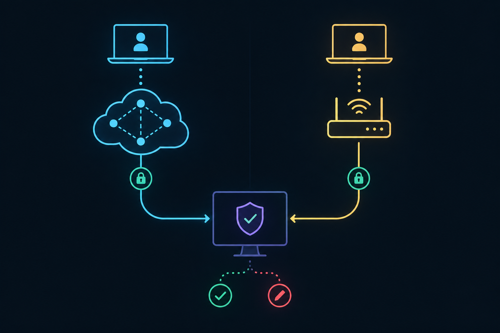
權限模型
| Scope | 可做的事 | 如何取得 | 時限 | 稽核 |
|---|---|---|---|---|
| view | Session／Agent 清單、事件、observe pane | passkey 登入 | idle 30 分、absolute 12 小時、不超過啟用期限 | 登入／登出 |
| control | agent.prompt、pane.sendKeys、pane control（takeover 需再驗證） | 桌面授予 control grant（15 分／1 小時／8 小時）＋passkey 提權 | 提權 ≤ 15 分可續，不超過 grant | 逐筆（輸入只記位元組數）＋桌面 toast |
| full | 完整 Herdr client（等同 shell） | policy 啟用＋裝置 full grant＋每次開啟前新鮮 passkey | 單次開啟，App 進背景即關閉 | 開啟／關閉＋位元組數＋桌面通知 |
威脅與對策
| 威脅 | 對策 |
|---|---|
| 手機遺失或未鎖時被拿走 | 每次連線 passkey＋生物辨識；session 短效；桌面撤銷單一裝置或全部；連續失敗鎖定。 |
| 配對 QR 被拍到或轉傳 | 一次性、5 分鐘；只接受一次領取；桌面比對 SAS 後才核准；配對當下綁定 passkey。 |
| 同網段／公網攻擊者 | Tailscale 路徑無區網 listener；LAN 路徑只接私有來源＋TLS；Host／Origin 檢查；無明文 HTTP。 |
| Tailscale 帳號被盜、他人加入 tailnet | passkey 仍是必要門檻；登入者比對；建議 ACL 只放行手機、可開 Tailnet Lock。 |
| iCloud／Google 帳號被盜導致同步 passkey 外流 | 仍需網路可達（tailnet 或同網段）；裝置可隨時撤銷；文件說明風險。 |
| 本機其他程式偽造 Tailscale header | header 只作輔助訊號；passkey RP ID 綁定網域，本機惡意網頁無法完成驗證。 |
| 瀏覽器上 DNS rebinding／CSWSH | 嚴格 Host 與 Origin 檢查；SameSite=Strict cookie。 |
| PWA 遭 XSS | 嚴格 CSP、無第三方 script、HttpOnly cookie；終端機輸出與 Markdown 一律視為不可信。 |
| Agent 輸出夾帶 prompt injection 或惡意跳脫序列 | 不載入剪貼簿 addon；連結需確認；核准 Agent 權限前顯示完整內容並二次確認。 |
| 小螢幕盲目核准 | blocked 狀態的核准畫面必須顯示完整待執行內容與工作目錄。 |
| gateway 漏洞 | 獨立程序、forbid(unsafe_code)、方法白名單、訊息與 stream 上限、白名單外方法全數測試拒絕。 |
| CA 私鑰外洩 | 私鑰只在 keychain；critical nameConstraints 限單一 .local 名稱；leaf 90 天輪替且不落地。 |
| 重連後重送輸入造成重複操作 | client 丟棄待送輸入並提示；server 不緩存輸入。 |
協定草圖
# HTTP（兩個 listener 相同路由）
GET / /index.html /pair /assets/* /manifest.webmanifest /sw.js /icons/*
POST /api/pair/claim {pairingId, secret, deviceLabel, deviceNonce} → {gatewayNonce, sas}
GET /api/pair/status long-poll → approved | rejected | expired
POST /api/pair/webauthn/options → PublicKeyCredentialCreationOptions
POST /api/pair/webauthn/finish → {deviceId}
POST /api/auth/options → PublicKeyCredentialRequestOptions
POST /api/auth/finish → Set-Cookie: __Host-yzc=…; Secure; HttpOnly; SameSite=Strict; Path=/
POST /api/auth/elevate/options {scope: "control" | "full"}
POST /api/auth/elevate/finish → {scope, until}
POST /api/auth/logout
GET /ws WebSocket（cookie + Origin）
# WS 文字 frame（JSON RPC）
→ {"id":1,"method":"terminal.observe","params":{"session":"work","target":"w1:p2","cols":132,"rows":40}}
← {"id":1,"result":{"stream":7}}
← {"event":"agent.status","data":{"session":"work","pane":"w1:p2","status":"blocked"}}
# WS 二進位 frame
[u32 BE streamId][ANSI bytes]
# admin stdio（NDJSON，desktop ⇄ gateway）
→ {"v":1,"type":"init", ...} ← {"v":1,"type":"ready","ports":{"loopback":47110,"lan":47443}}
→ {"v":1,"type":"pairing.create","path":"tailscale"} ← {"v":1,"type":"pairing.created","pairingId":"…","url":"…"}
← {"v":1,"type":"pairing.claimed","pairingId":"…","sas":"482913","deviceLabel":"iPhone"}
→ {"v":1,"type":"pairing.approve","pairingId":"…"}
← {"v":1,"type":"device.registered", ...}
← {"v":1,"type":"audit","deviceId":"…","scope":"control","action":"agent.prompt","summary":"…"}
→ {"v":1,"type":"device.revoke","deviceId":"…"} → {"v":1,"type":"shutdown"}
Herdr 多 client 語意（v0.9.1 原始碼）
- observe：可多人同時看，不能輸入、改尺寸或接管（
src/server/headless.rs:1365-1387）。 - control：每個 terminal 只有一個 owner；
--takeover會讓原 owner 收到terminal attach taken over並斷開，並把 pane PTY 改為控制者尺寸、加上direct_attach_resize_locks（headless.rs:1849-1905）。 - 完整 client：對某 tab 輸入或取得焦點的 client 會取得該 tab 的幾何控制，tab 內 pane 依其尺寸重排（
headless.rs:1273、server/headless/client_views.rs:689-708）；寬度 ≤ui.mobile_width_threshold（預設 64）時使用手機單欄版面（src/config.rs:78、src/client/shell/mobile.rs）。 - 遠端：Herdr 自身的遠端控制是 SSH stdio bridge（
src/remote/host.rs:6-36、src/remote.rs:13-37），沒有網路 listener 或驗證。 - Yuzora 現況：被接管時顯示「已由其他視窗取得控制」並提供手動取回，不會自動搶回（
src/app/panels/HerdrTerminalPage.tsx:92,1241-1243,1469）。
拒絕的方案
- Orca 式 LAN 明文 ws＋NaCl：JS 可被同網段攻擊者替換；無 secure context，不能用 passkey、SW、推播。
- 自建雲端 Relay：需營運 director／cell／push gateway；Tailscale 已提供穿牆能力。
- Tailscale Funnel、Cloudflare Tunnel、公開反向代理：服務暴露於網際網路。
- gateway 放在 Tauri 主程序內：與 DB 憑證、SSH 連線、keychain 權限同處一個行程，影響範圍最大。
- gateway 做成
yuzora-host的新 lane：網路與 WebAuthn 依賴會進入每一台遠端主機的 helper payload。 - 以 Herdr plugin
startup承載 gateway：沒有停止機制與程序監管。 - 原封不動轉發 Herdr API socket：會暴露
server.stop、plugin.link、integration.install、command.invoke等高風險方法。 - 把完整 Yuzora UI 投射成 web client（Orca 的 runtime scope）：權限過寬，且不適合手機。
風險與未來工作
- 公司日後可能封鎖 Tailscale 控制平面或 DERP；也請先確認公司政策是否允許。
- iOS 將 PWA 移到背景時會暫停 WebSocket；通知依賴 Phase 7 的 Web Push。
.local解析與.localRP ID 在部分 Android／Windows 環境可能不可用（Phase 0 矩陣決定）。- Tailscale CLI 的 JSON 欄位可能變動；以 fixture 測試並在探測失敗時停用 Tailscale 路徑。
- 新 Rust crate 的供應鏈風險；Phase 0 選型需檢視維護狀態與授權。
- 未來工作：SSH／WSL runtime（在各 owning host 執行 gateway）、Yuzora 關閉時仍能推播（Herdr plugin event hook
pane.agent_status_changed）、可選的常駐 gateway、iPad 版面、多台桌面切換。
依賴（候選，Phase 0 定案）
- companion crate：
yuzora-host（path）、axum（ws）或 hyper＋tokio-tungstenite、tokio-rustls、rustls（ring）、WebAuthn RP 驗證套件（不得依賴 OpenSSL）、hmac、sha2、rand、base64、serde、zeroize。 - desktop crate：rcgen（ring）、qrcode、純 Rust Web Push 加密／VAPID 實作；沿用既有 keyring、reqwest（rustls）。
- 前端：不新增套件；沿用已 patch 的
@xterm/xterm、@xterm/addon-fit、i18next、shadcn 元件、lucide-react。
參考
- Orca：
mobile/src/transport/mobile-connection-path-label.ts（Relay／Direct · Tailscale／Direct · LAN）、src/shared/tailnet-address.ts、src/main/runtime/rpc/mobile-socket-wiring.ts:149（只有 Relay 強制 v2 加密）、src/main/runtime/rpc/static-web-client-handler.ts、cloud/README.md。 - Herdr：Persistence and remote access（第三方 bridge 使用 observe／control）。
- Tailscale：Tailscale Serve（identity headers、Funnel 不帶 header、backend 只 listen localhost 的建議）。
- WebAuthn Level 3（RP ID 不可為 IP、UV 旗標）、RFC 8291、RFC 8292。
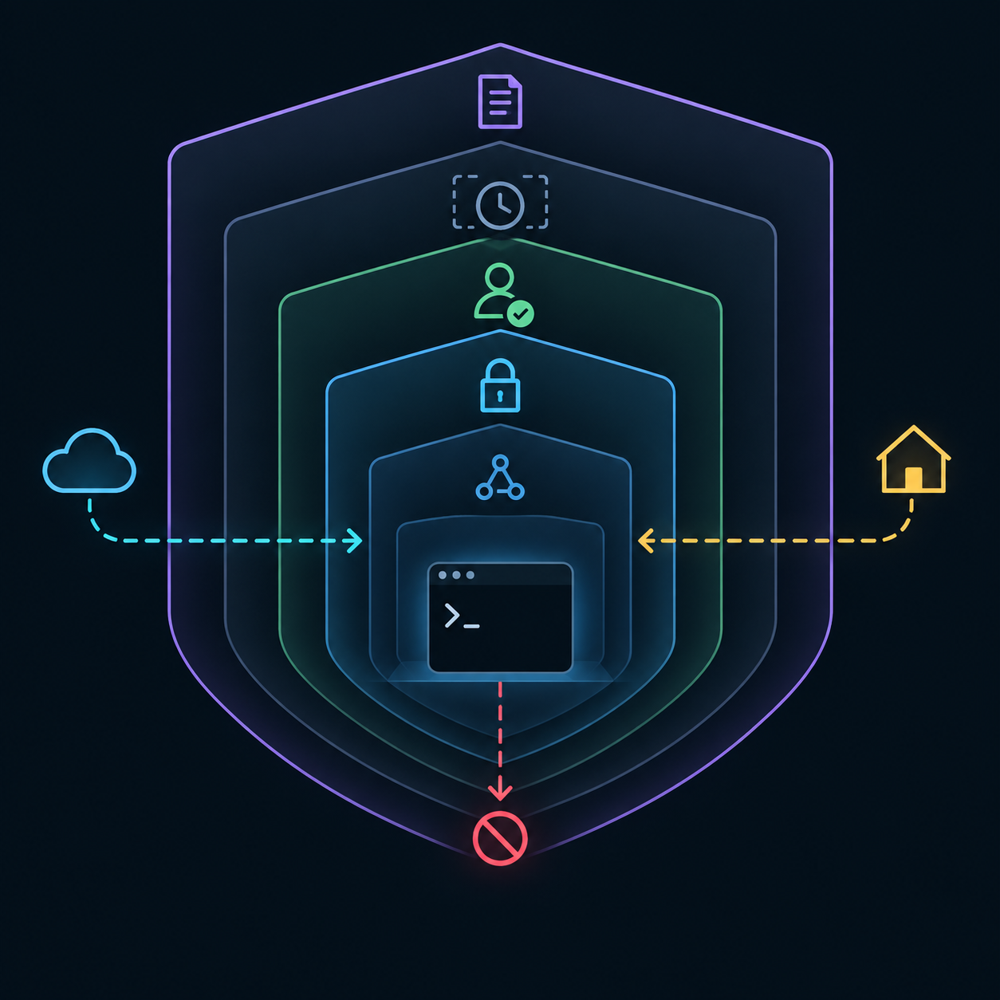
Amendments
尚無修訂。Phase 0 的真機結果、LAN 支援矩陣與依賴選型將以附加方式記錄於此。